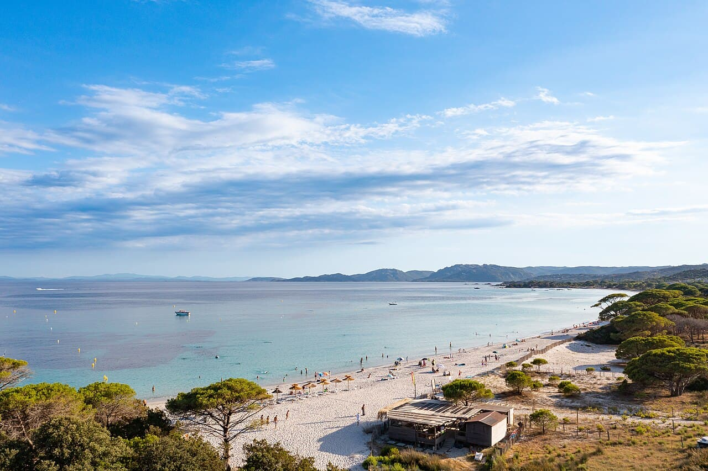

Palombaggia
Corse, France · baignade, snorkeling, paddle

Plage de sable blanc et pins parasols aux eaux turquoise, l’une des plus belles de Corse : baignade et snorkeling.
- Lieu
- Corse, France
- Niveau
- Débutant
- Activités
- baignade, snorkeling, paddle
- Type d'eau
- Mer / océan
- Coordonnées
- 41.55, 9.34 (position approximative du secteur)
Dangers à connaître
- Soleil intense, ombre rare.
- Très fréquentée en haute saison.
Le conseil d'Ocean Buddy
Arrive tôt pour la place et l’eau calme.
Ouvrir dans Ocean Buddy Télécharger sur l'App Store
Source : Description historique Ocean Buddy · vérification externe en attente.